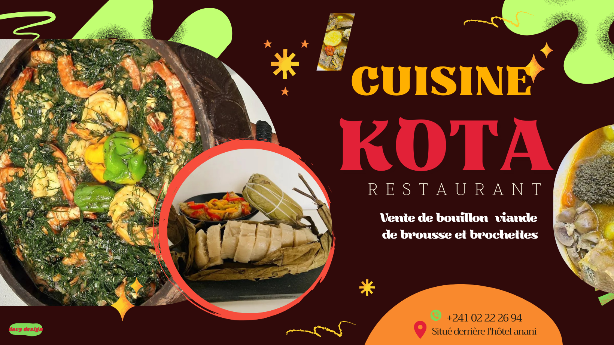

Aperçu du projet
Vitrine dynamique pensée pour mettre en valeur la cuisine africaine, la carte et les informations de contact.
Fonctionnalités clés
- Sections menu, histoire, localisation
- Formulaire de réservation via Formfree
- Design responsive et visuels immersifs
- Call-to-action clairs pour la conversion
Galerie


Difficultés rencontrées
Créer une ambiance authentique tout en gardant une navigation intuitive et une lecture rapide des informations essentielles.
Solutions mises en place
Palette chaude équilibrée, hiérarchie typographique claire et sections courtes orientées conversion.